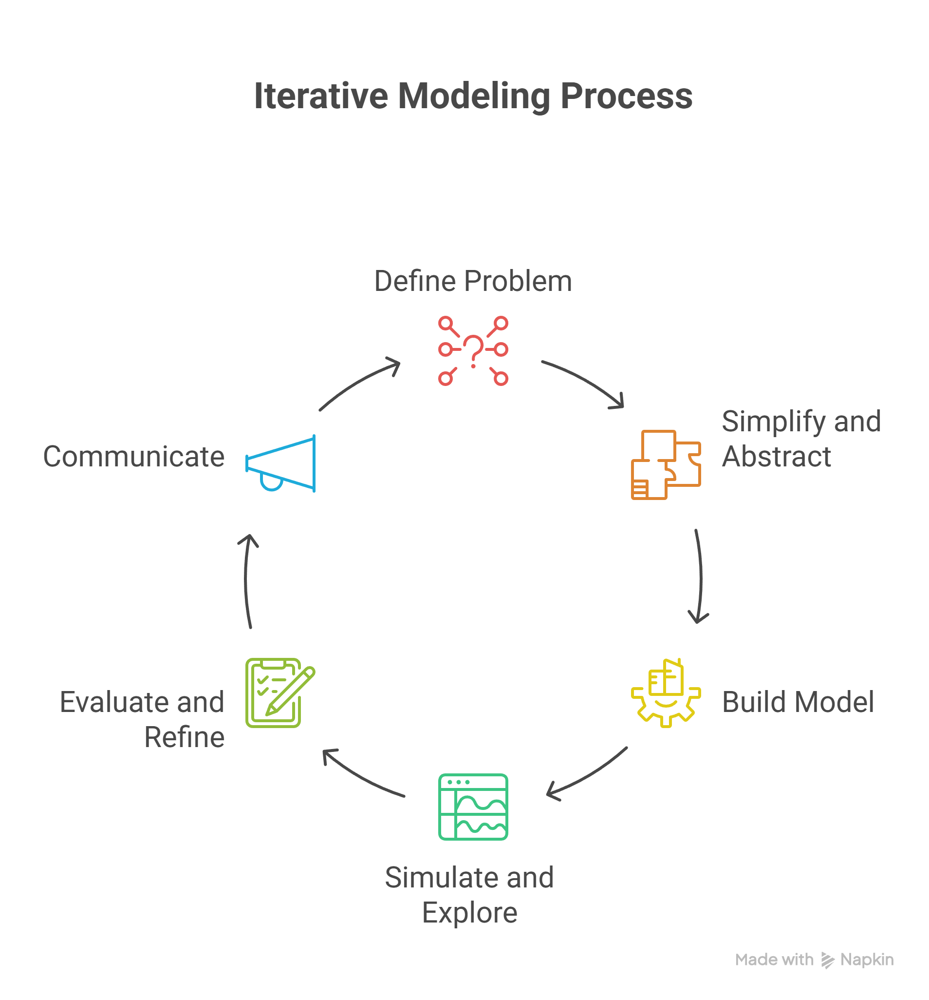

Chapter 2 Week 1: What is Modeling?
Theme: Orientation, purpose of modeling, and first steps in RStudio
Goal: Set a positive tone, introduce modeling as a mindset, and start building confidence with tools like RStudio and LLMs.
2.1 What we will be doing this week
Wed: Welcome, course expectations, and an introduction to modeling as a way of thinking about systems. We’ll define what a model is and why it’s useful in environmental science. You’ll also begin brainstorming the systems you’re most interested in.
Thu: Build and sketch simple conceptual models. We’ll talk about abstraction, simplification, and assumptions. You’ll draw your own system and explore a visual tool like LOOPY.
Fri: Begin working in RStudio! We’ll introduce the platform, walk through a tutorial, and use an LLM to help you write your first line of R code. This day is all about taking that first step—together. Brainstorm and team up for class projects.
2.2 Learning Objectives
By the end of Week 1, students should be able to:
- Define what a model is and explain its purpose in environmental science.
- Identify abstraction, simplification, and assumptions in a given model.
- Sketch and describe a simple conceptual model of a natural system.
- Critically assess the usefulness and limitations of models.
- Navigate basic RStudio functions and use LLMs to scaffold a simple model script.
- Start to formulate your projects
2.3 Do, Watch, Listen, Read: Student Preparation For The Week
2.3.1 Download and Install RStudio
Go the the following link to download RStudio RStudio Desktop Download
Note: Scroll down to find windows/mac version
Be sure to get RStudio - not R, RStudio includes everything you need and it creates a much easier user interface to work with
Now don’t worry - the expectation for this course is you have never worked with a coding language before. The purpose of this course is to offer a low stakes way to engage with coding and modeling, see its potential, and then take several other courses that focus on coding.
2.3.2 Do this tutorial
Before we can explore the environmental systems we care about—like climate change, conservation, and sustainability, we need tools to help us think clearly and creatively. One of those tools is RStudio.
Let’s be honest: learning a new programming environment can feel overwhelming. That’s okay. It’s normal to feel stuck, confused, or even frustrated when you’re starting out. But here’s the truth:
We don’t get to do cool science or explore new ideas without doing hard things first.
This tutorial will walk you through the basics of RStudio: how it looks, how to run code, and how to get started. You don’t need to master everything right away—just take it one step at a time. We’ll practice together in class, and you’ll have support from me, your peers, and even AI tools along the way.

2.4 Let’s Build a Model of Learning
This is the way I see your learning. It’s a simple feedback between coming to class and office hours.
Activity: What Drives Learning, Enjoyment, and Science?
Your First Model: A Feedback Loop
The diagram you’re looking at is called a systems model—specifically, a causal loop diagram. It’s the kind of model we use to:
- Represent complex systems using simple relationships
- Visualize feedback (both positive and negative)
- Experiment with how change flows through a system
In this case, the system is about you as a learner.
What’s Going On Here? Learning increases Enjoyment, which in turn increases Science.
Factors can be added (green nodes) or subtracted (red nodes) from each part of the system.
You can interact with the model by dragging the slider or clicking the nodes to see what happens.
Task This is the first model of the course—and it’s about you. Your task:
- Play with the model:
- What happens when you increase the positive input?
- What if something subtracts from learning?
- As a group, add ideas to these categories:
-What adds to your learning?
- What subtracts from your learning?
Sketch your own version of the loop:
- What would you add to the system to help you succeed in this class?
- Can you identify a feedback loop (something that reinforces itself)?
- What’s something that could make the system spiral negatively?
Wrap-up Discussion
- What surprised you about how small changes affected the system?
- How could this approach be used to model an environmental system?
2.5 What Is Systems Thinking and Simulation?
Systems thinking is about seeing the world as an interconnected web of relationships—where change in one part of a system can ripple through others in surprising ways. It’s a mindset that helps us understand the feedback loops, delays, and patterns that shape everything from ecosystems and climate to cities and communities.
Simulation is how we bring those systems to life. It’s the process of building simplified, dynamic representations of complex systems so we can ask questions, test scenarios, and explore “what if” ideas—without needing to experiment in the real world.
Simulations help us:
- Focus on what really matters in a system
- Explore how change unfolds over time
- Make the invisible visible
Together, systems thinking and simulation allow us to understand environmental challenges more deeplyand to imagine and test solutions before we act. In this course, we’ll use both to explore systems you care about, from forest ecosystems to climate strategies and sustainable cities.
2.6 Abstraction—and Why Is It So Hard?
Abstraction is the process of simplifying a complex reality by focusing only on the parts that matter most for a specific question or purpose. It’s about stripping away detail so you can see the system more clearly.
That might sound simple—but it’s not.
In science (and in life), we’re surrounded by messy, interconnected realities. When we build a model or design a simulation, we have to decide:
- What do we include?
- What do we leave out?
- What assumptions are we making?
Those are hard decisions. There’s no single “right” answer. Every abstraction involves a trade-off between realism and usability. Too simple, and the model might be useless. Too complex, and it might be impossible to understand or use.
But here’s why abstraction matters:
It’s the starting point for every scientific model, every simulation, every breakthrough idea.
Abstraction helps us:
- Make sense of overwhelming complexity
- Communicate ideas clearly
- Focus our attention on what’s driving change
- Build models we can analyze, test, and improve
Every person’s model will be different because of the unique structure and assumptions they make along the way. That’s not a problem—it’s what makes modeling so powerful and flexible. In climate modeling for instance, they way we create projections of future climates is by taking the average response of many climate models to a expected change in forcings.
Sketching Exercise
A sketch is a visual model. Task:
- Draw a picture of a chair
- Share your picture with those around you
- What assumptions did you all make in your model
- Which sketch was right?
2.7 The Problem-Solving Process
At the heart of modeling and simulation is a desire to solve real-world problems—questions about climate, conservation, cities, and sustainability that don’t have simple answers. To tackle those problems effectively, we need a clear and flexible process.
Here’s a step-by-step framework we’ll use throughout this course:

2.7.1 Define the Problem
Start by clearly stating:
- What system are you trying to understand or improve?
- What question are you trying to answer?
- Who is affected by this problem, and why does it matter?
Example: “How can we reduce the urban heat island effect in our city?”
2.7.2 Simplify and Abstract
No model can capture every detail. So ask:
- What are the key components of this system?
- What can we leave out (at least for now)?
- What assumptions are we making?
This is where abstraction comes in—choosing what to keep and what to simplify so that the model is useful without being overwhelming.
2.7.3 Build a Conceptual or Mathematical Model
Now sketch or code a model that represents the system:
- Use diagrams, equations, or simulations
- Identify feedbacks, delays, and influences
- Decide how time and change are represented
This is where your system takes shape.
2.7.4 Simulate and Explore
Run your model. Ask:
- What happens when you tweak variables?
- Are the results stable, surprising, or sensitive?
- Does this align with what you expected—or challenge it?
Simulation helps us test our ideas before we act in the real world.
2.7.5 Evaluate and Refine
A model is never “finished.” It’s a tool for learning.
- What are the model’s strengths and weaknesses?
- How could it be improved?
- What new questions did it raise?
Sometimes refining the problem is just as important as refining the solution. Science is often getting to the next why?
2.7.6 Communicate
Even the best model won’t make a difference if no one understands it.
Can you explain your model clearly—visually, verbally, or interactively?
Who needs to hear this, and how should you frame it?
Good science isn’t just about building models—it’s about sharing them.
By following this process, you’re not just solving technical problems—you’re learning how to think critically, collaborate effectively, and design solutions that matter.
2.8 Intro to Prompt Engineering
Before we dive into RStudio, we need to learn a surprisingly powerful skill: how to talk to AI.
When we use tools like ChatGPT or Copilot, the results we get depend entirely on how we frame the question. This practice—designing questions and instructions for an AI—is called prompt engineering.
Good prompts:
- Give clear context
- State what you’re trying to do
- Are specific, but not overloaded with details
- Might include examples or data structure
Here’s the difference:
❌ Less helpful prompt:
“How do I R?”
✅ More helpful prompt:
“I’m working in RStudio. I have a dataset called CO2, and I want to make a scatter plot of uptake vs. concentration. Can you show me the code?”
2.8.1 Why This Matters
Prompt engineering isn’t just about getting the right code—it’s about learning how to collaborate with AI to think through problems.
In this course, you’ll use LLMs to:
- Get unstuck when your code won’t run
- Try new ideas quickly
- Explore how changing your prompt changes the response
And just like with any tool, the more thoughtfully you use it, the better it works.
Dataset Spotlight: CO₂ Uptake in Grass Plants
About the Experiment
The \(CO_2\) dataset comes from a classic plant physiology experiment that measured how grass plants respond to different concentrations of carbon dioxide under varying conditions. Researchers wanted to understand how \(CO_2\) levels , plant type , and treatment (chilled vs. non-chilled) affected the rate at which plants take up carbon from the atmosphere—a key part of understanding photosynthesis and climate-plant interactions.
Specifically, they measured \(CO_2\) uptake in grass plants from two groups:
- Quebec (cooler climate)
- Mississippi (warmer climate)
Some plants were kept at normal temperatures, while others were chilled to simulate colder conditions. The goal was to see how these factors influenced carbon uptake at different CO₂ concentrations.
Dataset Structure
This dataset includes 84 observations and 5 variables:
| Variable | Description |
|---|---|
Plant |
Identifier for the individual plant (Qn or Mn, where Q = Quebec, M = Mississippi) |
Type |
Origin of the plant: "Quebec" or "Mississippi" |
Treatment |
"chilled" or "nonchilled" (i.e., whether the plant was cooled) |
conc |
CO₂ concentration in the ambient air (in mL/L) |
uptake |
Rate of CO₂ uptake (μmol/m²/s) – this is the response variable |
Why It’s Useful for Us
This dataset is a great first modeling tool because it’s:
- Small and easy to understand
- Rich enough for meaningful patterns
- Great for visualization, group comparisons, and *basic regression modeling**
- A real-world example of how environmental variables interact